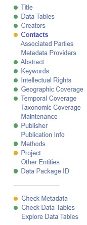

ezEML
ezEML is an GUI-based system devised by the Environmental Data Initiative to help in preparation of structured metadata. While your data will eventually be published using the Ecological Metadata Standard (a machine-readable format), these forms will guide you in preparing the information for that file. ezEML is in active development and improving all the time. Having learned how to prepare the metadata for a Niwot dataset using ezEML, you will be well on your way to being able to prepare data from other projects to this or similar repositories, so it is worth investing some time into learning this system.
Workflow for Niwot datasets in ezEML
- When you have the data, abstract, methods, and title ready to go, please send them to the Niwot Information manager, who will review the information you have provided and provide any feedback on formatting or content before proceeding.
- The Niwot information manager will then initiate the metadata preparation, using the EDI’s ezEML platform, and invite you to collaborate on a metadata document. Look for an email from EDI Support support@edirepository.org.
- Sign into EDI using any of the options (an EDI account, google, ORCID or github).
- Click the ‘collaborate’ button in the upper right corner to complete the metadata. The metadata will be partially filled out for you including the Project, Intellectual Rights, Contacts, and Data Package ID, as well as the Title, Abstract and Methods you provided.
- You should not ever be creating or submitting ‘New’ EML document for any Niwot data. While this workflow is available to you on EDI for other projects, please work only from the template shared with you through the Collaborate feature for Niwot datasets.
Using ezEML
- EDI has extensive documentation provided in its User Guide
- EDI also has extensive documentation provided interactively within the ezEML platform. The (?) icon next to each section will bring up relevant documentation.
- EDI uses a system of colored badges to validate data and metadata. When your metadata is complete, there should be no red badges left!

- Preview your entire metadata before finalizing, using the Import/Export->Preview your Metadata in the EDI Portal menu at the top of the page. This is how your dataset will appear for the whole wide world once it is published. Check for spelling errors, weird units, anything else that you might have missed in paging through the individual forms.
- When you have completed filling out the metadata, email the Niwot Ridge Information Manager, who will check over the contents and submit. Do not use the share/submit button on the ezEML platform.
Tips
- Often the ezEML parser gets the ‘column types’ wrong. It is simply guessing based on content so if you have categorical variables that have numerical contents (e.g. blocks 1-3), it will often ‘assume’ this is a measured (‘Numerical’) type column and prompt you for units. You can use the ‘change type’ button to set this back to ‘text’ (even if the entire content of the column is numbers, for example for indexed values) and/or ‘categorical’ (for use when numeric codes signify particular categories).
- Conversely, ezEML may miscategorize numeric columns as text when missing value codes are strings. This can also be reset by editing the column types as above, and then adding explicit missing value codes.